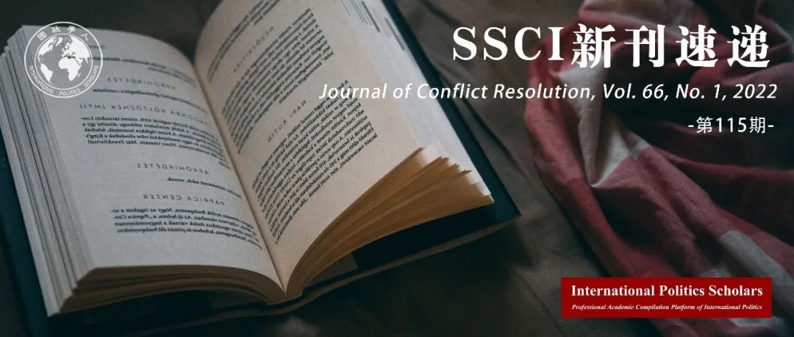

收录于合集
#新刊速递 123 个
#冲突解决杂志 1 个

期刊简介 ****
Journal of Conflict Resolution《冲突解决杂志》是一本融合了社会科学理论和人类冲突研究的跨学科杂志。JCR着眼于国家之间和国家内部的冲突，但也探索各种可能有助于理解战争与和平问题的群体间和人际冲突。根据2021年Journal Citation Reports显示，其影响因子为3.530。

本期目录 ****
01 威慑与约束：联合军演是否加剧冲突?
Deterrence and Restraint: Do Joint Military Exercises Escalate Conflict?
02 政治还是绩效？联合国维和行动的领导责任
Politics or Performance? Leadership Accountability in UN Peacekeeping
03 气候变化谈判中的集体风险和分配正义
Collective Risk and Distributional Equity in Climate Change Bargaining
04 重新审视国内冲突中的机会主义：自然资源的开采和医疗服务的提供
Revisiting Opportunism in Civil Conflict: Natural Resource Extraction and Health Care Provision
05 战争中的间接控制：叛军支持中的授权和策划
Indirect Governance at War: Delegation and Orchestration in Rebel Support
摘要译文
01
威慑与约束：联合军演是否加剧冲突?
【题目】 Deterrence and Restraint: Do Joint Military Exercises Escalate Conflict?
【作者】 Raymond Kuo，兰德公司政治学专家，纽约州立大学、福特汉姆大学和奥尔巴尼大学终身教授；Brian Dylan Blankenship，迈阿密大学政治学助理教授。
【摘要】 多国军事演习是军事合作和意图的最显著表现之一。平均每8.9天就会启动一次。但联合军事演习(JMEs)经常被认为增加了战争的风险。利用关系契约方法（relational contracting approach），我们认为正式的军事联盟调节了联合军事演习的效果。演习和同盟的功能是互补的，前者可以对对手的军事挑衅做出有针对性的反应，而后者对合作伙伴提供了制度约束，并确立了合作伙伴的总体战略限制。二者结合，联盟削弱了演习的冲突升级效应，在威慑对手的同时约束了伙伴。本文利用1973年至2003年联合军事演习的有向二元数据的两阶段模型来检验这一理论。作者发现，总体上，联合军事演习不会使冲突升级，特别是与盟友进行的联合军事演习会降低冲突升级的概率。
Multinational military exercises are among the most notable demonstrations of military cooperation and intent. On average, one is initiated every 8.9 days. But it has often been argued that joint military exercises (JMEs) increase the risk of war. Using a relational contracting approach, we claim that formal military alliances mediate the effect of JMEs. Exercises and alliances serve complementary functions: The former allows targeted responses to military provocations by adversaries, while the latter provides institutional constraints on partners and establishes a partnership’s overall strategic limitations. In combination, alliances dampen the conflict escalation effects of exercises, deterring adversaries while simultaneously restraining partners. We test this theory using a two-stage model on directed dyadic data of JMEs from 1973 through 2003. We find that JMEs in general do not escalate conflict, and that JMEs conducted with allies in particular reduce the probability of conflict escalation.
02
政治还是绩效？联合国维和行动的领导责任
【题目】 Politics or Performance? Leadership Accountability in UN Peacekeeping
【作者】 Magnus Lundgren，哥德堡大学政治科学高级讲师；Kseniya Oksamytna， 伦敦城市大学国际政治讲师，伦敦国王学院民主化与维和行动项目访问研究员；Vincenzo Bove，华威大学政治科学教授。
【摘要】 国际组织在更换表现不佳的领导人与维持有影响力或关键成员国的忠诚度之间面临着权衡。这种绩效—政治困境在联合国维和行动中尤为突出。维和行动领导人有责任确保维和人员执行任务、维持纪律和保持安全。然而，如果领导人指挥不力，联合国秘书处是否有能力和意愿取代他们？本文调查了新收集的 1978 年至 2017 年 38 次维和行动中 238 名文职和军事领导人的数据，发现文职领导人的任期对绩效不敏感，但绩效不佳的军事领导人更有可能被替换。本文还发现有证据表明，政治考虑使联合国的问责工作复杂化。在保持任务绩效不变的情况下，来自强大或派遣大量部队的国家的军事领导人在任时间更长。
International organizations face a trade-off between the need to replace poorly performing leaders and the imperative of preserving the loyalty of influential or pivotal member states. This performance-politics dilemma is particularly acute in UN peacekeeping. Leaders of peacekeeping operations are responsible for ensuring that peacekeepers implement mandates, maintain discipline, and stay safe. Yet, if leaders fail to do so, is the UN Secretariat able and willing to replace them? We investigate newly collected data on the tenure of 238 civilian and military leaders in thirty-eight peacekeeping operations, 1978 to 2017. We find that the tenures of civilian leaders are insensitive to performance, but that military leaders in poorly performing missions are more likely to be replaced. We also find evidence that political considerations complicate the UN’s efforts at accountability. Holding mission performance constant, military leaders from countries that are powerful or contribute large numbers of troops stay longer in post.
03
气候变化谈判中的集体风险和分配正义
【题目】 Collective Risk and Distributional Equity in Climate Change Bargaining
【作者】 Aseem Mahajan，哈佛大学文理学院政府系博士生；Kline Reuben，石溪大学政治科学系和行为政治经济学中心副教授；Tingley Dustin，哈佛大学文理学院政府系教授。
【摘要】 国际气候谈判是在集体风险增加的背景下进行的：因气候变化导致灾难性经济损失的可能性将继续增加，除非直到全球的缓和努力足够阻止之。本文引入了一个新的、结合了气候变化这一特征的轮流出价的讨价还价模型，并用一个激励实验检验了该模型。本文采用了两个重要分配公平原则：应对减轻气候变化付出代价的能力和对其潜在的灾难性后果的脆弱性程度。本文的结果显示脆弱程度较低的一方不会利用其讨价还价伙伴的更大的脆弱性。他们反而会更加慷慨。相反，能力更大的一方则提出的报价更不慷慨。根据最近的政府间气候变化专门委员会报告，集体风险本身及其重要性使得更好地理解气候变化谈判的这一关键战略特征变得更加紧迫。
International climate negotiations occur against the backdrop of increasing collective risk: the likelihood of catastrophic economic loss due to climate change will continue to increase unless and until global mitigation efforts are sufficient to prevent it. We introduce a novel alternating-offers bargaining model that incorporates this characteristic feature of climate change. We test the model using an incentivized experiment. We manipulate two important distributional equity principles: capacity to pay for mitigation of climate change and vulnerability to its potentially catastrophic effects. Our results show that less vulnerable parties do not exploit the greater vulnerability of their bargaining partners. They are, rather, more generous. Conversely, parties with greater capacity are less generous in their offers. Both collective risk itself and its importance in light of the recent Intergovernmental Panel on Climate Change report make it all the more urgent to better understand this crucial strategic feature of climate change bargaining.
04
重新审视国内冲突中的机会主义：自然资源的开采和医疗服务的提供
【题目】 Revisiting Opportunism in Civil Conflict: Natural Resource Extraction and Health Care Provision
【作者】 Justin Conrad, 佐治亚大学国际贸易与安全中心副教授；Liana Eustacia Reyes，莱斯大学政治学系博士候选人；Megan A. Stewart，美利坚大学国际服务学院助理教授。
【摘要】 自然资源和叛乱治理之间的关系是什么？已有研究认为，资源丰富的团体提供社会服务的动机较少。然而，本研究认为即使是反叛分子，在资金充足的条件下也可能有动力向平民提供一些社会服务。具体而言，从自然资源开采中获利的反叛组织比未从中获利的团体更有可能提供公共医疗保健服务，以保障可靠的平民劳动力。通过使用关于自然资源开采和反叛组织提供社会服务的数据，本研究找到了强有力的经验证据，对学者和决策者皆具有启示意义。
What is the relationship between natural resources and rebel governance? Previous studies have argued that resource rich groups have fewer incentives to provide social services. We argue, however, that even well-funded rebels may have incentives to provide some social services to civilians. Specifically, rebel groups profiting from the extraction of natural resources should be more likely to offer health care services as a means of ensuring a dependable civilian workforce than groups who do not profit from natural resources. Using data on both the extraction of natural resources and social service provision by rebel groups, we find strong empirical evidence to support our argument. We conclude with implications for scholars and policymakers.
05
战争中的间接控制：叛军支持中的授权和策划
【题目】 Indirect Governance at War: Delegation and Orchestration in Rebel Support
【作者】 Tim Heinkelmann-Wild，慕尼黑大学政治科学研究所博士生；Marius Mehrl，慕尼黑大学政治科学研究所博士生。
【摘要】 国家往往通过支持叛乱团体来间接攻击对手,而不是直接攻击。虽然这些支持关系有很大的不同，但已有研究并没有对其进行全面的说明。为了解释国家对支持类型的选择，本文根据国家对叛军的控制机会来区分两种支持模式：授权可以“亲手”控制，而“放手”策划使支持国能够装糊涂，并且不损害叛军在当地的合法性。本文认为，当亲力亲为的授权可以被目标一致或竞争所取代时，支持国更喜欢精心策划；而当冲突非常突出时，他们更喜欢授权。文章使用1975-2009年的全球数据进行的检验支持了前两个预测。令人惊讶的是，国家的能力也使放手策划更有可能。本文通过将间接控制理论的研究转移到对间接战争的研究，并对其进行统计检验，从而推进了对来自外部的叛乱支持的理解。
Instead of attacking their adversaries directly, states often do so indirectly by supporting rebel groups. While these support relationships vary considerably, existing research lacks a comprehensive account thereof. To explain states’ choice of support, we suggest differentiating between two modes of support relationships according to the control opportunities they offer states over rebels: while delegation enables “hands-on” control, “hands- off” orchestration allows for plausible deniability and does not harm rebels’ local legitimacy. We argue that sponsors prefer orchestration when “hands-on” control can be substituted by goal alignment or competition; and they prefer delegation when the conflict is highly salient. Tests using global data for the period 1975-2009 support the first two expectations. Surprisingly, states’ capabilities also render “hands-off” orchestration more likely. The paper advances the understanding of external rebel support by transferring insights from indirect governance theory to the study of indirect wars and putting it to statistical test.
编译 | 张曼娜 胡瑞琨 朱晓洁 何诗雨 罗洁
审校 | 张曼娜 胡瑞琨 朱晓洁 何诗雨 罗洁
排版 | 黄紫蓝 邱意雯
文章观点不代表本平台观点，本平台评译分享的文章均出于专业学习之用, 不以任何盈利为目的，内容主要呈现对原文的介绍，原文内容请通过各高校购买的数据库自行下载。

国政学人
支持学术公益与知识传播
微信扫一扫赞赏作者 __赞赏
已喜欢，对作者说句悄悄话
取消 __
发送给作者
发送
最多40字，当前共字
上一页 1/3 下一页
长按二维码向我转账
支持学术公益与知识传播
受苹果公司新规定影响，微信 iOS 版的赞赏功能被关闭，可通过二维码转账支持公众号。